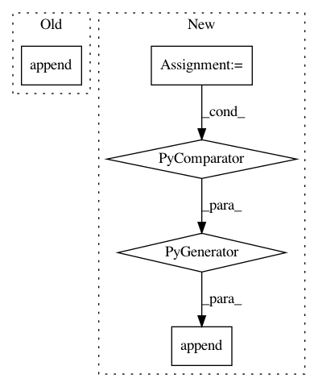

732197e23a937b7b6d196936519c16ec6317ea9f,rllib/execution/train_ops.py,TrainTFMultiGPU,__call__,#TrainTFMultiGPU#Any#,167
Before Change
self.sess, permutation[batch_index] *
self.per_device_batch_size)
for k, v in batch_fetches[LEARNER_STATS_KEY].items():
iter_extra_fetches[k].append(v)
if logger.getEffectiveLevel() <= logging.DEBUG:
avg = averaged(iter_extra_fetches)
logger.debug("{} {}".format(i, avg))
fetches[policy_id] = averaged(iter_extra_fetches, axis=0)
After Change
self.sess, permutation[batch_index] *
self.per_device_batch_size)
batch_fetches_all_towers.append(
tree.map_structure_with_path(
lambda p, *s: self._all_tower_reduce(p, *s),
*(batch_fetches["tower_{}".format(tower_num)]
for tower_num in range(len(self.devices)))))
// Reduce mean across all minibatch SGD steps (axis=0 to keep
// all shapes as-is).
fetches[policy_id] = tree.map_structure(
In pattern: SUPERPATTERN
Frequency: 3
Non-data size: 5
Instances
Project Name: ray-project/ray
Commit Name: 732197e23a937b7b6d196936519c16ec6317ea9f
Time: 2021-03-08
Author: sven@anyscale.io
File Name: rllib/execution/train_ops.py
Class Name: TrainTFMultiGPU
Method Name: __call__
Project Name: deepmind/sonnet
Commit Name: 2a3a5d3cef42e5bf997cfb9dac87163ccaa3c8f1
Time: 2019-09-16
Author: tomhennigan@google.com
File Name: sonnet/src/utils.py
Class Name:
Method Name: format_variables
Project Name: google/deepvariant
Commit Name: 13a85e08e713f374933bc4fc082f67e1fa8dcd02
Time: 2018-02-20
Author: cym@google.com
File Name: deepvariant/util/io_utils.py
Class Name:
Method Name: read_shard_sorted_tfrecords